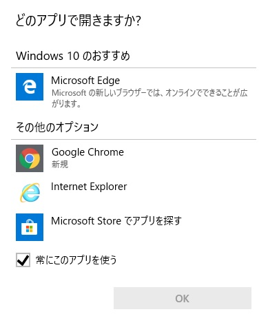
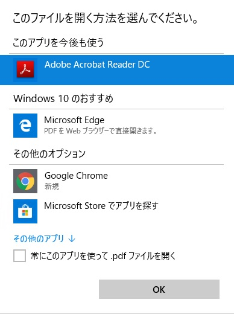
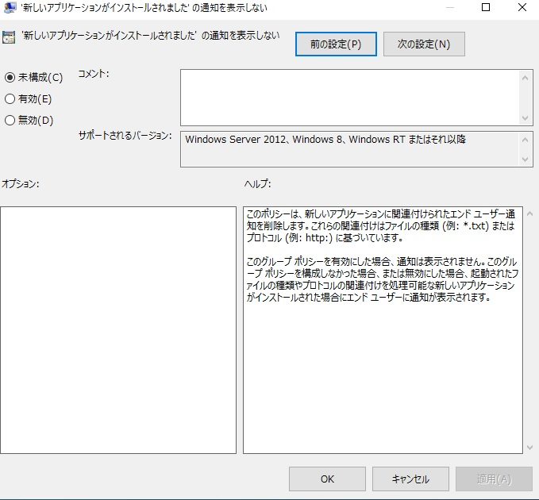

本記事はマイクロソフト社員によって公開されております。
こんにちは。Windows サポートチームの木村です。
今回は Windows 10 でファイルを開いた際に 「どのアプリで開きますか？」や 「このファイルを開く方法を選んでください。」 という通知が発生する原因と、この通知を非表示にする方法をご紹介を致します。
目次
該当のメッセージについて
今回ご紹介するメッセージは以下のようなメッセージでございます。
表示例 1 :

表示例 2 :

メッセージが表示される原因
Windows 8 から、既定のアプリの設定はユーザーに決定権を持たせるべきであるという設計思想のもと、動作変更が行われています。
(参考) Windows 8 でプログラムからファイルの種類とプロトコルの関連付けができない
http://support.microsoft.com/kb/2846141/ja
この設計思想から、ユーザーが開こうとした拡張子やプロトコルを取り扱うことができるアプリケーションが新規にインストールされた後には、ファイルを開く方法をユーザーに選択させるために 「どのアプリで開きますか？」や 「このファイルを開く方法を選んでください。」 という通知が表示されます。
本メッセージは、既に既定のアプリの設定が行われている拡張子やプロトコルに対しても発生するメッセージであり、ご利用環境の既定のアプリの設定がリセットされたことや、設定が消えてしまったということを示すものではございません。
メッセージを非表示にするための方法
以下のグループ ポリシーを設定することによってご紹介いたしました通知を非表示にすることができます。
1 | [コンピューターの構成] > [管理用テンプレート] > [Windows コンポーネント] > [エクスプローラー] |

以上の情報が、Windows をご利用いただく皆様の一助になりますと幸いです。